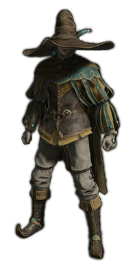
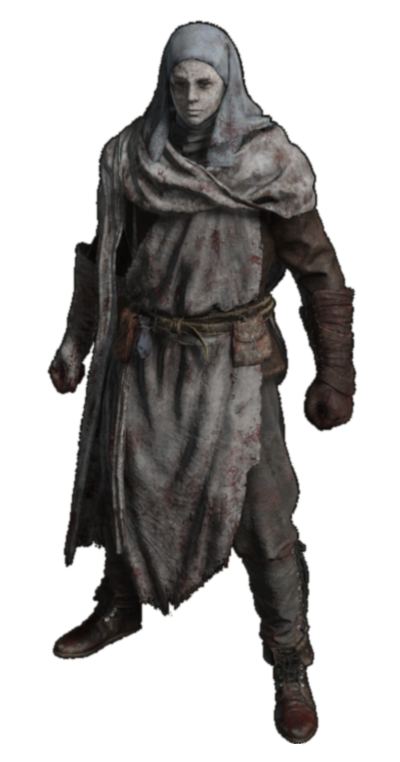

Bull Goat set
The Bull-Goat Set in Elden Ring is a massive, heavy armor known for its exceptional poise and defense. While it slows movement, it allows the wearer to endure even the heaviest attacks. This set is linked to Great Horned Tragoth, a legendary warrior famed for his resilience in battle.
Verdigris Set
The Verdigris Set in Elden Ring is a light armor covered in tarnished green and copper hues. It offers moderate protection while prioritizing mobility, making it ideal for agile fighters. The set has an eerie, weathered look, as if corroded over time. Despite its fragile appearance, it provides decent resistance to elemental damage.
General Radahn’s Set
General Radahn’s Set in Elden Ring is a massive, imposing armor worn by the legendary Starscourge Radahn. Adorned with red and gold, the set offers excellent physical defense and high resistance to magic. The armor’s towering presence reflects Radahn’s unmatched strength, and the lion motifs symbolize his ferocious power in battle. Though heavy, it provides exceptional protection, fitting for a warrior who fought against the very stars themselves.
Blaidd's Set
The Blaidd Set in Elden Ring is a stylish and rugged armor worn by Blaidd, the half-wolf warrior. Made from sturdy leather and fur, the set balances decent protection with mobility, perfect for agile combatants. Its distinct wolf-themed design reflects Blaidd’s wild, untamed nature, while offering moderate resistance to physical and elemental damage. The set’s sleek and primal look complements those who favor quick, relentless strikes.
Black Knife Set
The Black Knife Set in Elden Ring is a lightweight, stealth-focused armor worn by the assassins of the Black Knife clan. Cloaked in black with a tattered veil, it enhances agility and stealth, making it ideal for sneaking past enemies. While offering low physical defense, it provides excellent resistance to magic. The set’s ominous design reflects the shadowy nature of its wearers, perfect for players who prefer silent, deadly approaches in battle.
Hoslow's Set
Hoslow's Set in Elden Ring is an ornate armor worn by Juno Hoslow, a knight of distinguished lineage. The set features intricate silver detailing and a flowing red cape, symbolizing noble heritage and pride. It provides solid protection with a balanced mix of poise and defense, making it suitable for both offense and defense. The set’s elegant yet intimidating design mirrors Hoslow’s refined but deadly combat style.
Glintstone Crowns
The Glintstone Crowns Set in Elden Ring consists of various headpieces worn by the scholars of the Raya Lucaria Academy. These crowns, adorned with shimmering glintstones, enhance the wearer's intelligence and boost sorcery power. Each crown reflects the scholar’s rank and specialty, providing unique bonuses at the cost of reduced physical protection. The set is essential for mages seeking to amplify their magical prowess while showing their academic affiliations.
Spellblade Set
The Spellblade Set in Elden Ring is a lightweight armor worn by sorcerers who blend swordplay with magic. Adorned with subtle blue accents, the set enhances both intelligence and glintstone sorcery, making it ideal for hybrid spell-sword builds. While offering moderate physical defense, its true strength lies in boosting magic damage, allowing the wearer to strike a balance between quick melee attacks and powerful sorceries.

Preceptor's Set
The Preceptor's Set in Elden Ring is an elegant, scholarly armor worn by the instructors of the Raya Lucaria Academy. This set features intricate patterns and vibrant hues, symbolizing the wearer's deep connection to magic and knowledge. It provides solid resistance to magic while enhancing sorcery and intelligence. The flowing robes and unique design reflect the prestigious status of its wearers, making it a fitting choice for those who wield both spell and blade.
Royal Remain's set
The Royal Remains Set in Elden Ring is a somber armor associated with the remnants of royalty. Dressed in dark, tattered robes and a distinctive crown, this set offers moderate protection while enhancing resilience against death and decay. The unique design symbolizes the fall of a once-great lineage, evoking a sense of melancholy. With its focus on both defense and restoring health over time, it suits those who embrace the darker aspects of the game’s lore.
Drake Knight set
The Drake Knight Set in Elden Ring is a formidable armor worn by the fearsome Drake Knights, known for their mastery of both sword and sorcery. Crafted from tough scales and metal, the set provides excellent physical defense while showcasing a draconic aesthetic. Its distinctive helmet features a horned design, adding to the knightly presence. This armor is well-suited for those who seek a balance of strength and magical prowess, making it a versatile choice for various combat styles.
War Surgeon Set

The War Surgeon Set in Elden Ring is light armor favored by the bloodthirsty War Surgeons. It offers moderate protection and high mobility, ideal for evasive playstyles. The White Mask boosts attack power by 10% when near enemies affected by blood loss, making it an excellent choice for arcane builds that focus on status effects. Its bloodstained design complements both style and damage potential for arcane users.
Haligtree Knight Set
The Haligtree Knight Set in Elden Ring is an elegantly crafted armor worn by the elite knights of the Haligtree. Featuring intricate floral motifs and a striking silver finish, it balances poise and defense, making it suitable for both offense and defense. The set offers strong resistance to physical and magical attacks, embodying the grace and strength of the Haligtree’s guardians.
Ruler's Set
The Ruler's Armor in Elden Ring is a majestic set worn by those of noble lineage. This imposing armor features ornate designs and a regal cape, symbolizing authority and power. While it offers solid protection, its true strength lies in enhancing the wearer's abilities, particularly in boosting their resilience in battle. The Ruler's Armor is perfect for players who want to combine style with formidable defense, embodying the essence of a commanding presence on the battlefield.
Haligtree Soldier Set
The Haligtree Knight in Elden Ring is a formidable warrior clad in the Haligtree Knight Set. Known for their exceptional combat skills and unwavering loyalty, these knights serve as protectors of the sacred Haligtree. Armed with a shield and a sword, they excel in both offense and defense, capable of executing powerful attacks while maintaining strong poise. Their elegant armor reflects their noble status, making them a symbol of grace and strength in the realm.